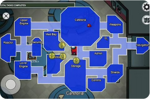
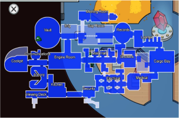
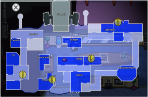
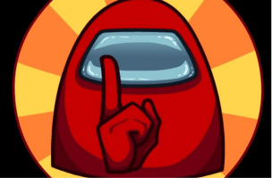
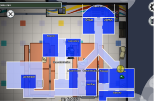
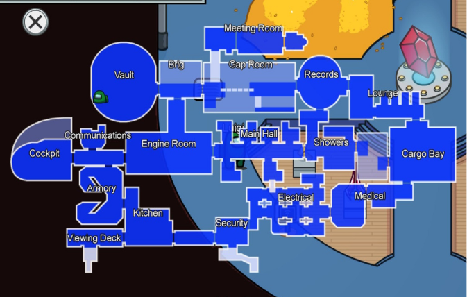
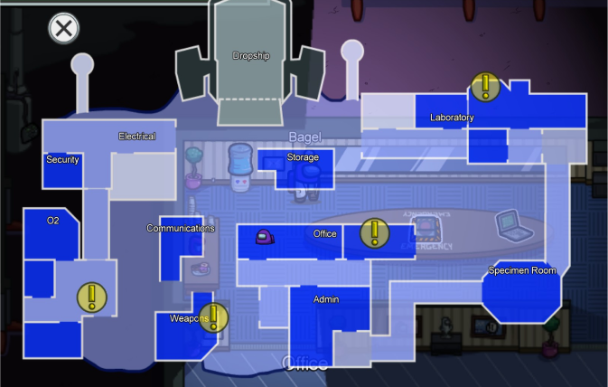
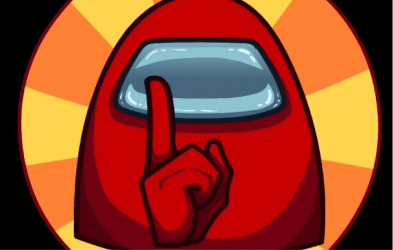
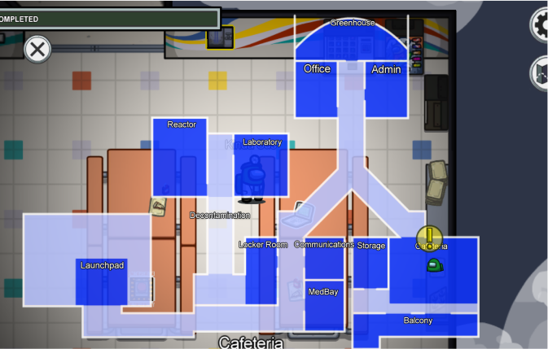

The Skeld

The Skeld, often shortened to Skeld, is the first map in Among Us set on a spaceship in outer space. It is automatically selected upon opening the game for the first time. The map was the only one included in the first version of the game's launch in 2018, with MIRA HQ, Polus, The Airship, and Map 5 being added subsequently.
The Airship

The Airship, often shortened as Airship, is the fourth map in Among Us, based on the Toppat Clan's Airship in the Henry Stickmin game Infiltrating the Airship. The Airship is currently the largest map in Among Us, includes more tasks, and has seventeen new locations. Added with the new map were multiple Henry Stickmin-related.
Polus

Polus, also known as the Polus Outpost or Planet Polus, is the third map in Among Us, which is set on the planet Polus as a planetary base.
Map 5

Map 5 is an upcoming fifth map for Among Us. It was initially announced at the Summer Game Fest on June 10, 2021. Nearly nothing is known about this map yet apart from its planned release date in 2022.
MIRA HQ

MIRA HQ is the second map in Among Us, set high up in the Earth's atmosphere. The facility is owned by, and is the headquarters for the company MIRA.